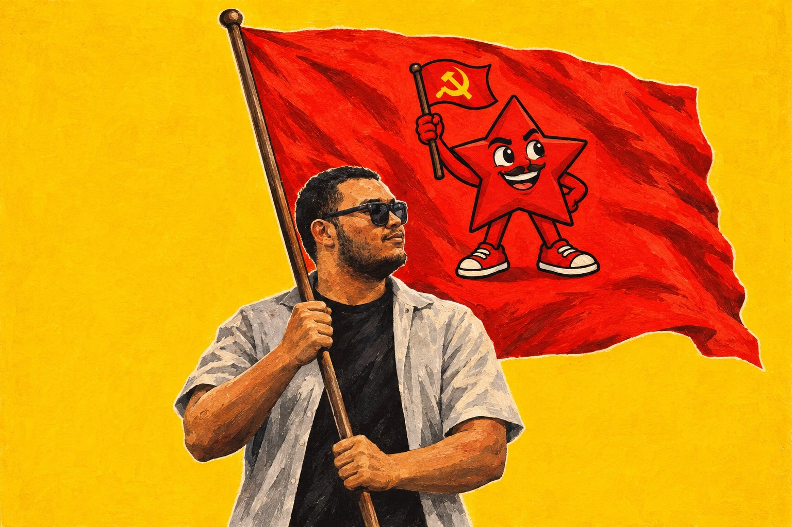

para novos militantes
Séries curtas de formação política. Escolha uma e dê o play.
O que é ser militante?
Militante é quem não fica só assistindo. É a pessoa que se dedica, de forma organizada e constante, a uma causa em que acredita. Existe militante de esquerda e de direita: a palavra não é um palavrão.
Ler mais
A palavra vem do latim militare, mas hoje quer dizer simplesmente atuar, participar, se comprometer. Existe militante do movimento estudantil, sindical, ambiental, feminista, negro, LGBTQIA+, religioso, do bairro… Quem ajuda na associação de moradores, organiza um abaixo-assinado ou estuda e debate política também está militando.
Ser militante não é ser fanático nem violento. É estudar, conversar, se organizar com outras pessoas e agir para mudar a realidade. É isso que esta formação quer ajudar você a fazer.
Carregando o catálogo…